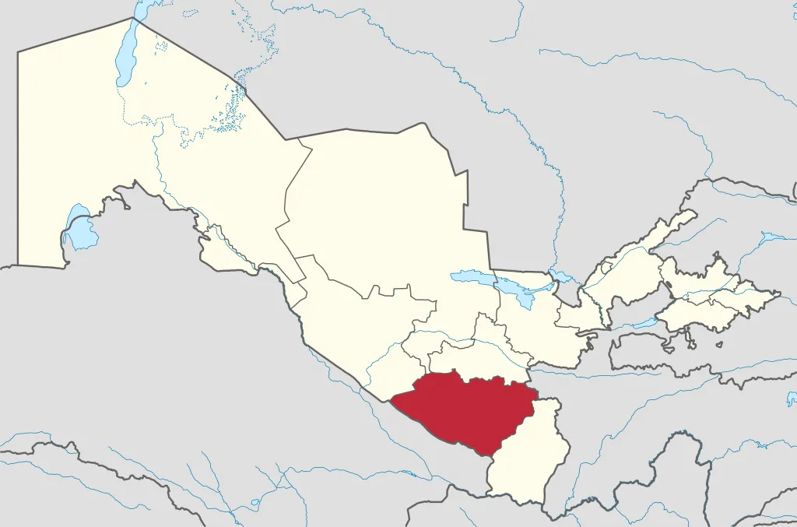

Qashqadaryo viloyati
Qashqadaryo viloyati — Oʻzbekiston Respublikasi tarkibidagi viloyat. 1924-yil 1-noyabrda tashkil etilgan. Respublikaning janubi-gʻarbida, Qashqadaryo havzasida, Pomir-Olay togʻ sistemasining gʻarbiy chekkasida, Amudaryo va Zarafshon daryolari, Hisor va Zarafshon tizma togʻlari orasida. Shimoli-gʻarbdan Buxoro, janubi-sharqdan Surxondaryo, janubi-gʻarb va gʻarbdan Turkmaniston, sharqdan Tojikiston va Samarqand viloyatlari bilan chegaradosh. Maydoni 28,6 ming km². Aholisi 3225, 8 ming kishi (3-oʻrin) (2020). Tarkibida 13 tumani (Dehqonobod, Kasbi, Kitob, Koson, Mirishkor, Muborak, Nishon, Chiroqchi, Shahrisabz, Yakkabogʻ, Qamashi, Qarshi, Gʻuzor), 12 shahar (Beshkent, Kitob, Koson, Muborak, Tallimarjon, Chiroqchi, Shahrisabz, Yakkabogʻ, Yangi Nishon, Qamashi, Qarshi, Gʻuzor), 4 shaharcha (Yangi Mirishkor,Dehqonobod, Miroqi, Eski Yakkabogʻ, Pomuq), 147 qishloq fuqarolari yigʻini, 1064 qishloq bor (2005).
Aholisi, asosan, oʻzbeklar (91,2 %), shuningdek, tojik, turkman, rus, qozoq, ukrain, ozarbayjon, koreys, qirgʻiz, turk, ukrain, belorus va boshqalar millat vakillari ham yashaydi. Aholining oʻrtacha zichligi 1 km²ga 83,7 kishi. Shahar aholisi 587,5 ming kishi, qishloq aholisi 1790,7 ming kishi (2005). 20-asr boshlarigacha hozirgi Qashqadaryo viloyati hududida yashagan aholining koʻpchiligi orasida urugʻqabilalarga boʻlinish saqlanib kelgan. Mas, Qarshi shahri va uning atroflarida mangʻit, saroy, qavchin, qatagʻon, kutchi, qipchoqlar, xtoy, qirq va boshqalar urugʻlar, Shahrisabz va uning atroflarida kenagas, saroy, qutchi, turk, qatagʻon, qalmoq, qangʻli, chuyut, qiyot, qoʻngʻirot, mojor, mangʻit, mitan, moʻgʻul, nayman, sayot urugʻlari, Gʻuzor va uning atroflarida qavchin, kerayit, qoʻngʻirot, mangʻit va boshqalar urugʻlar yashagan. Ular dehqonchilik, chorvachilik va hunarmandchilik bilan shugʻullanishgan.
Viloyatdagi temir yoʻl uzunligi 401 km. Asosiy temir yoʻl magistrallari Kogon — Qarshi — Dushanba, Qarshi — Kitob, Qarshi- Samarqand. Yangi qurilayotgan Toshgʻuzor — Boysun-Qumqoʻrgʻon (umumiy uz. 223 km) temir yoʻlning 106,2 km qismi Qashqadaryo viloyati hududidan oʻtadi. 2004-yil oktabrgacha ushbu yoʻlning 112 km dan ziyod Toshgʻuzor — Dehqonobod va Qumqoʻrgʻon — Boysun qismlari foydalanishga topshirildi. Viloyatda jami 13,9 ming km uzunlikda avtomobil yoʻllari mavjud. Shundan umumiy foydalanilayotgan yoʻllar uz. 3,4 ming km, xoʻjaliklar hisobidagi yoʻllar uz. 10,5 ming km. Qashqadaryo viloyati hududidan respublika ahamiyatiga ega boʻlgan Qarshi — Amudaryo (Turkmaniston), Katta Uzbekiston trakti (Toshkent — Termiz), Qarshi — Buxoro, Qarshi — Samarqand avtomobil yoʻllari oʻtadi. Qarshidan Toshkent, Termiz, Samarqand, Buxoro, Navoiy, Denov va boshqalar shaharlarga avtobuslar qatnaydi. Qarshi aeroportidan Qarshi — Moskva, Qarshi — Toshkent, Qarshi — Andijon va boshqalar yoʻnalishlarda yoʻlovchilar tashuvchi samolyotlar qatnovi yoʻlga qoʻyilgan.